Bloques de periféricos
Alimentación de periféricos
Los periféricos con interfaz analógico (ADC y DAC) tienen una línea de alimentación separada del resto de componentes, Vdd, que puede ser conectada tanto a 3.3 V como a 5 V según interese. Por ejemplo, si sólo se van a manejar señales entre 0 y 3.3 V, conectar Vdd a 3.3 V permite usar los 10 bits del ADC para discretizar el rango de 0 a 3.3V, teniendo así la mayor precisión disponible.
Esta configuración se realiza mediante un jumper en la tira de pines J14:
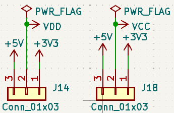
Del mismo modo, la tira J18 permite escoger 3.3 V o 5 V para la señal Vcc, disponible para la polarización de sensores analógicos.
Interruptores y leds
La siguiente figura muestra el esquemático de este sencillo bloque de periféricos, que es común para las dos versiones de la placa.
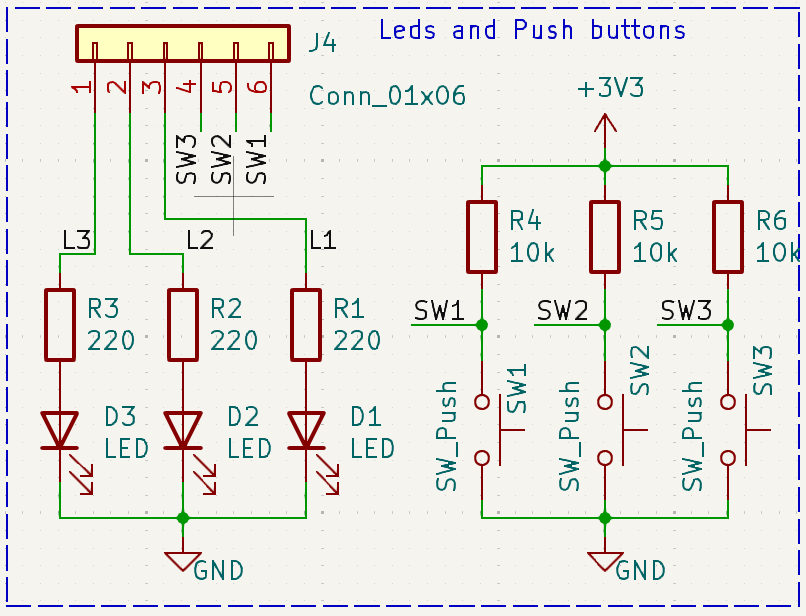
Por un lado tenemos tres leds (D1-D3) con el cátodo conectado a GND. El ánodo de cada uno de ellos se conecta a una resistencia de polarización de 220 Ohmios, cuyo otro extremo se conecta a uno de los pines de la tira J4. Podemos usar esos pines de J4 para conectarlos a un pin libre de la raspberry pi usando un cable dupont hembra-hembra. Entonces desde un programa que ejecute en la raspberry pi podemos enceder el correspondiente led si ponemos el pin seleccionado a 1 (Vdd), ya que entonces la corriente en el led será de aproximadamente 7 mA: (3.3 - 1.8)/220 = 7 mA.
Por otro lado, tenemos tres pulsadores de botón (SW1-SW3), con un terminal conectado a GND y el otro conectado a una resistencia que a su vez conecta a la alimentación (3.3 V). El punto entre la resistencia y el pulsador de botón se conecta a uno de los pines de la tira J4. Estos pines pueden conectarse a alguno de los GPIOs de la raspberry pi usando un cable dupont hembra-hembra. Si dicho GPIO se configura como entrada podremos usarlo para ver si el pulsador está pulsado (el valor leído del pin será 0) o sin pulsar (el valor leído del pin será 1). Siempre habrá que tener en cuenta que en los cambios de estado se producirán rebotes, debido principalmente a las oscilaciones mecánicas del muelle incluido en el pulsador. Estos rebotes pueden ser filtrados por software.
Led RGB
Este periférico sólo está disponible en la BEE v2, su circuito se muestra a continuación:
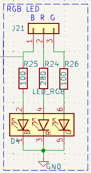
Se trata de un led rgb, conectado en cátodo común a tierra, mientras que los terminales de los 3 ánodos se conectan cada uno a una resistencia, cuyo otro extremo se expone a través de la tira de pines J21. Podemos usar cables de puente dupont para conectar estos terminales a pines GPIO de la raspberry pi con el fin de controlar la intensidad de los canales Rojo Verde y Azul del led (habitualmente generando señales PWM).
Zumbador (Buzzer)
Las dos versiones montan el mismo zumbador piezoeléctrico (datasheet). La siguiente figura muestra el esquemático del circuito en la versión 1 de la placa BEE. Como vemos, los terminales del zumbador se conectan a los dos pines centrales de una tira de pines 2x3 (J3), estando el resto de pines de la tira conectados a tierra (2) y los pines 18 (1), 13 (5) y 12 (6) de la raspberry pi. Como indica la web pinout.xyz, estos pines adicionales pueden configurarse con las funciones PWM0, PWM1 y PWM0 respectivamente.
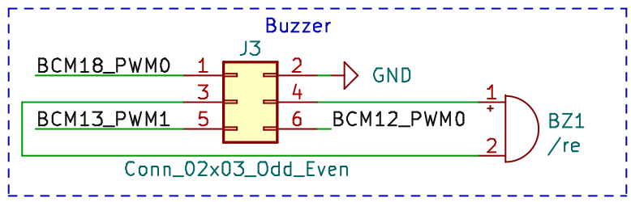
Este circuito se modificó en la versión 2 de la placa, como muestra la siguiente figura. En este caso los terminales del zumbador se han conectado diréctamente a tierra y al terminal central de una tira de pines 1x3 (J3). Los pines restantes de esta tira se han conectado a los pines 12 (PWM0) y 13 (PWM1) de la raspberry pi.
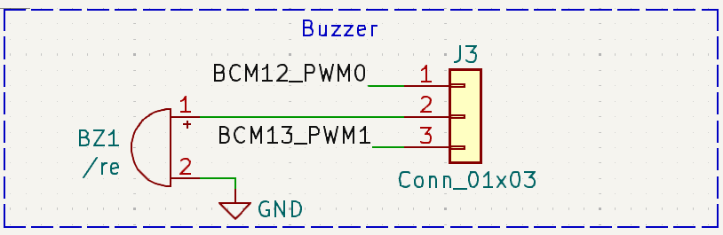
En ambos casos puede usarse un jumper para conectar el zumbador al pin 12 (PWM0) o el 13 (PWM1), y probar así el uso del zumbador con señales PWM generadas con los cotroladores internos del microcontrolador. En la versión 1 de la placa deberemos usar otro jumper para conectar el otro extremo a tierra.
Conversor Analógico Digital (ADC)
En ambas versiones de la placa se monta un conversor analógico digital MCP3008, con las siguientes características:
- 10 bits de resolución
- 8 canales de entrada
- Interfaz SPI
- Entrada independiente para el voltaje de referencia
Los esquemáticos de la conexión del ADC en las dos versiones de la placa se muestran y explican a continuación. Sólo se difieren en la conexión de las entradas analógicas, debido a la modificación que se realizó en la red de polarización de sensores. En ambos casos, se debe conectar un voltaje de referencia al ADC antes de usarlo. Si no se dispone de un voltaje de precisión, la placa proporciona una forma sencilla de conectar la entrada Vref a la alimentación Vdd del ADC.
En la primera versión las entradas analógicas se conectan a uno de los lados de un socket 2x8 (J8), conectando el otro lado a una tira de pines 2x8 (J7), por el lado en el que están conectadas una serie de resistencias de polarización habituales (220, 10k, 15k y 47k) cuyo otro extremo está conectado a tierra. En el otro lado de la tira J7 los pines se conectan a la alimentación analógica (Vcc). De esta forma, podemos conectar un sensor analógico de dos patas en el socket (J7), teniendo una de las patas conectada a la tira J8 y a una resistencia de pull-down. La otra pata queda conectada a Vcc. Podemos entonces utilizar un jumper en J8 para conectar la salida del sensor a la entrada analógica correspondiente del ADC.
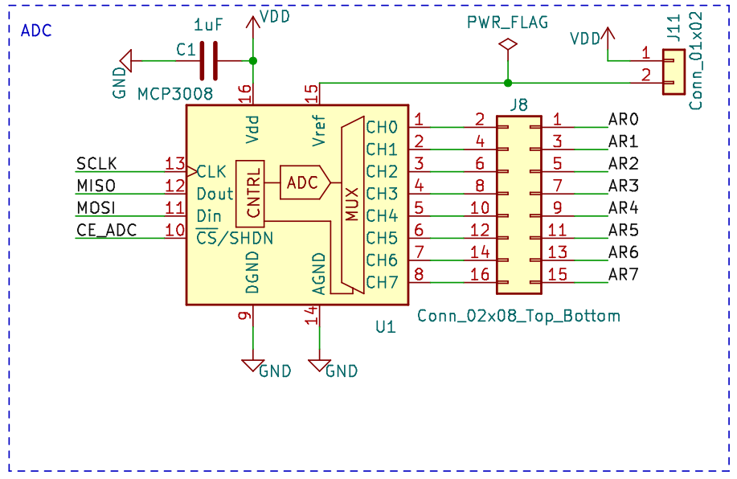
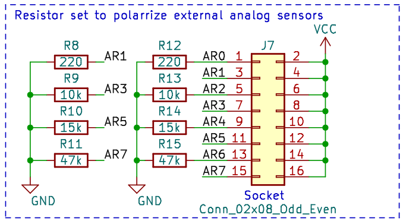
Aunque este circuito permite conectar fácilmente muchos sensores analógicos al ADC, tenemos limitaciones de las resistencias a escoger, y no podemos usar resitencias de pull-up. Esto se modificó en la segunda versión de la placa, en la que se redefinió la red de polarización para facilitar la conexión serie o paralelo de las resistencias incluidas, así como su conexión como conjuto de pull-up o pull-down. Además, el nuevo circuito de polarización introduce dos potenciómetros que nos permiten obtener resistencias de polarización más especiales. El esqumático se muestra a continuación:
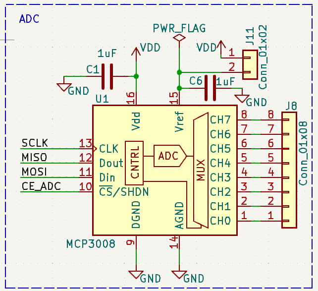
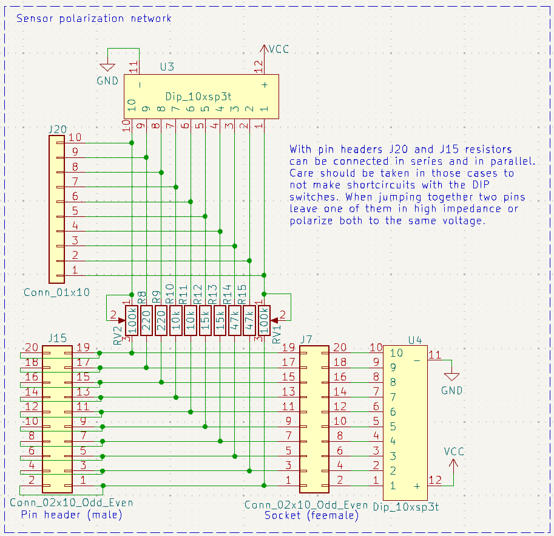
Este circuito está pensado para conectar fácilmente al ADC sensores analógicos de dos terminales, en los que uno de ellos debe ir conectado directamente a GND o Vcc, y el otro a una resistencia de pull up o pull down. La salida del sensor se toma entonces del terminal conectado a la resistencia. En estos casos, el sensor se conecta al socket J7, escogiendo la posición que lleve a la resistencia que necesitamos, y usando los micro interruptores de U3 y U4 para conectar a GND o VCC tanto el sensor como la resistencia seleccionada. La salida del sensor estará entonces disponible en la tira de pines J15, y podemos usar un cable dupont hembra-hembra para conectarla a la entrada del ADC deseada, disponible en J8.
Si ninguna de las resistencias que hay en el circuito es la resistencia que necesitamos, tenemos dos opciones:
-
Conectar dos (o más) de las resistencias disponibles en serie o paralelo para obtener la resistencia deseada. Para ello podemos usar las tiras de pines J15 y J20, y en algún caso un cable dupont.
-
Usar los potenciómetros incluidos en la red de polarización, utilizando un destornillador pequeño para ajustarlo y un multímetro para medir su valor.
En ambas placas el interfaz digital del ADC está conectado a la tira de pines J2, que permite conectar con jumpers el ADC (y/o el DAC) a la raspberry pi, usando los pines que corresponden al controlador SPI (el software debe configurar dichos gpios para esta funcionalidad). La siguiente figura muestra el esquemático de este conector:
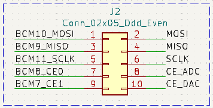
Conversor Digital Analógico (DAC)
La placa BEE incorpora también un MCP4911, un Conversor Digital Analógico (DAC) de 10 bits, que puede ser conectado también al controlador SPI a través de la tira de pines J2 usando jumpers. El DAC queda conectado entonces al canal CE1. El esquemático es idéntico en ambas versiones de la placa:
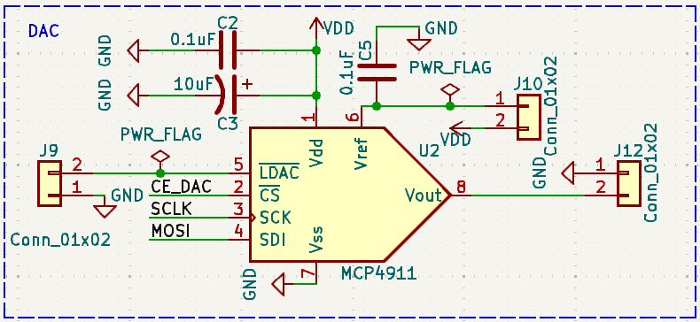
Como pasaba con el ADC, debemos conectar un voltaje de referencia al DAC. Podemos colocar un jumper en J10 para conectar la entrada Vref a la tensión de alimentación del DAC (VDD) si no tenemos una referencia de mayor precisión. Asimismo, el DAC dispone de una entrada LDAC, que debe ponerse a 0 V para cargar un nuevo valor en el registro de salida del DAC (consultar el Datasheet del componente). La placa BEE conecta esta entrada a la tira J9, de modo que puede usarse un jumper para conectarlo a 0 permanentemente o utilizar otro GPIO para activarlo por software cuando sea apropiado.
El voltaje de salida del DAC está disponible en uno de los pines de la tira J12, estando el otro pin conectado a GND. Esto facilita la conexión de cualquier dispositivo que deba ser alimentado con la tensión generada con el DAC.
Finalmente, como sucede con el ADC, el interfaz digital del DAC se puede conectar mediante jumpers a los pines del controlador SPI de la raspberry pi utilizando el conector J2 (el software debe configurar dichos gpios para esta funcionalidad).
Driver de display 7 segmentos
Este periférico sólo está disponible en la versión 2 de la placa BEE, su circuito es el siguiente:
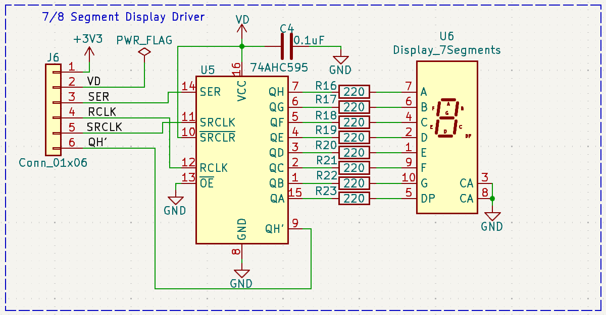
Como vemos, se compone principalmente de dos componentes:
- Un registro de desplazamiento 74AHC_AHCT595
- Un display de 7 segmentos.
El 74AHC595 utiliza doble buffer. Tiene un registro de desplazamiento que permite cargar en 8 ciclos de la señal SCLK un valor de 8 bits enviado en serie por la entrada serie (SER), y un registro de salida que permite almacenar un valor de 8 bits mientras se carga un nuevo valor en el registro de desplazamiento.
El valor almacenado en el registro de salida (QA-QH) se conecta a las entradas del display 7 segmentos (A-G, DP) a través de 8 resistencias de 220 ohmios, que limitan la corriente. El display mostrará el digito codificado en estos 8 bits (cada bit indica si se debe encender o no uno de los segmentos). El display es activo en alta, es decir, que un 1 en la entrada A indica que debe encenderse el segmento A, mientras que un 0 en dicha entrada indicaría que debe apagarse el segmento. Como la entrada de habilitación de la salida (nOE) está conectada a GND, la salida está permanentemente habilitada.
La señal nSRCLR (nMR en el datasheet) permite resetear los biestables del registro de desplazamiento. Está conectada permanentemente a 1 (no se pueden resetear).
El resto de señales (SER, SRCLK y RCLK) se conectan a la tira de pines J6, y podeos usar cables de puente dupont para conectarlos a los pines GPIO que queramos.
El funcionamiento del dispositivo es como sigue. Los bits se van cargando en serie en el registro de desplazamiento. Cuando generamos un pulso en la señal SRCLK, el valor en la entrada serie (SER) se carge en el biestable 0, el biestable 1 cargará el valor que tenía antes el biestable 0, el biestable 2 el valor que tenía antes el 1 y así sucesivamente. La salida QH' nos permite en serie otro 74H595.
Cuando tengamos el valor completo cargado (8 bits), podemos generar un pulso en la señal RCLK para cargar los biestables del registro de salida con el contenido almacenado en el registro de desplazamiento. Esto nos permite ir cargando un nuevo valor sin alterar lo que se está mostrando en el display 7 segmentos, mostrando de golpe el nuevo valor cuando se hayan cargado los 8 nuevos bits.
Conector UART
Se trata de una tira de pines (J13) con la configuración adecuada para que podamos conectar un cable FTDI USB-UART y usar el puerto serie de la mini-uart que incorpora la raspberry pi, ideal para proporcionar un terminal serie a cualquier aplicación que corra en el microcontrolador.
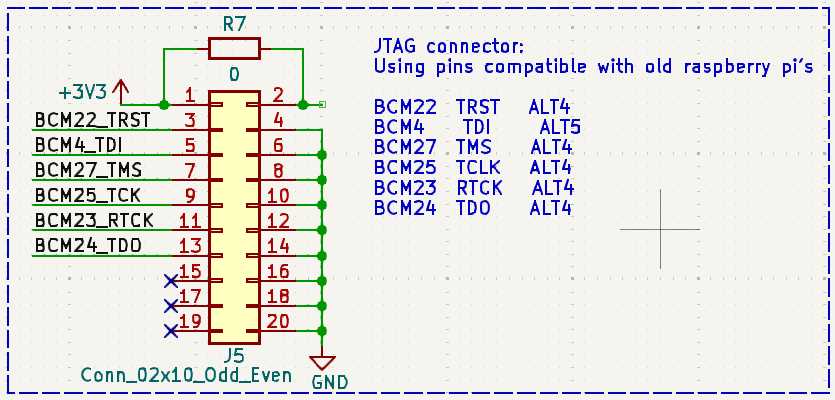
Conector JTAG
Se trata de una tira de pines compatible un conector JTAG de 20 pines. La raspberry pi incorpora un controlado JTAG de depuración en circuito. Se puede usar este controlador si se configura correctamente la funcionalidad de los pines BCM4, BCM22-25 y BCM27, que están rutados a las posiciones adecuadas de la tira de pines J5.
Para usar el depurador debemos conectar un dongle de depuración JTAG a J5, y usar un software como OpenOCD para establecer una sesión de depuración.